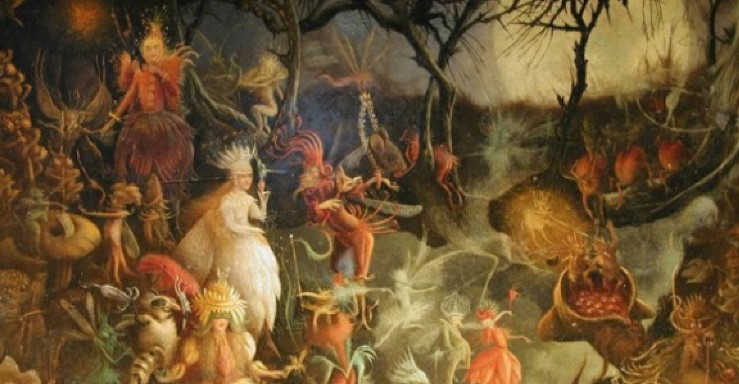
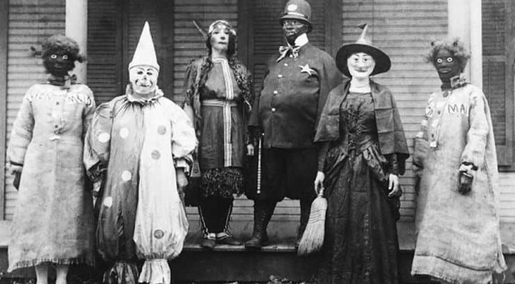
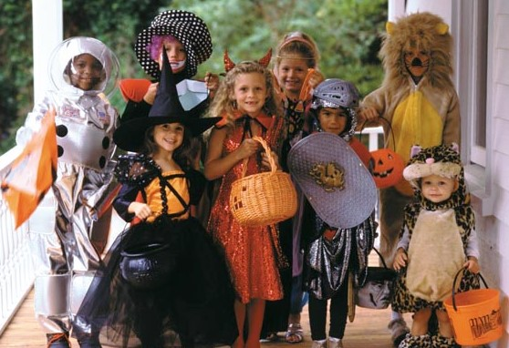

The Origins of Halloween
Ancient Roots

Celtic Festival of Samhain: Halloween traces its origins back to the ancient Celtic festival of Samhain, celebrated around November 1. This festival marked the end of the harvest season and the beginning of winter, when it was believed that the boundary between the living and the dead was blurred. Celts lit bonfires and wore costumes to ward off roaming spirits.
In Medieval Times
Souling and Guising: In medieval Europe, people began to celebrate by "souling," where the poor would go door-to-door, offering prayers for the dead in exchange for food. This practice evolved into "guising," where children dressed in costumes and performed tricks for treats.
American Influences

Immigration and Commercialization: Halloween was brought to America by Irish and Scottish immigrants in the 19th century. By the early 20th century, it had transformed into a community-centered holiday characterized by parties and festivities. In the 1920s and 1930s, it became more commercialized, with the introduction of Halloween cards, costumes, and decorations.
Modern Celebrations

Trick or Treating: Halloween was brought to America by Irish and Scottish immigrants in the 19th century. By the early 20th century, it had transformed into a community-centered holiday characterized by parties and festivities. In the 1920s and 1930s, it became more commercialized, with the introduction of Halloween cards, costumes, and decorations.
Cultural Impact
Ghosts Gone Global: Halloween was brought to Halloween is now celebrated in various forms around the world, often incorporating local traditions. It has also influenced popular culture, inspiring films, literature, and music.